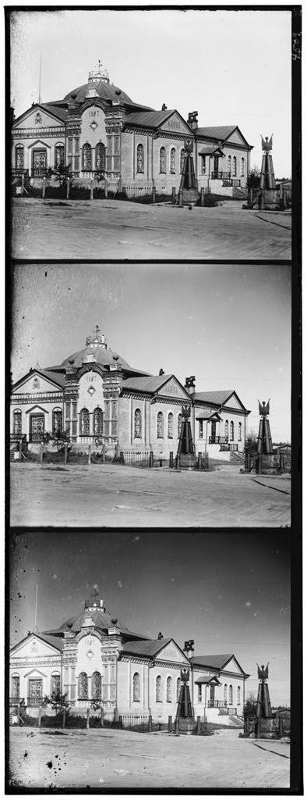
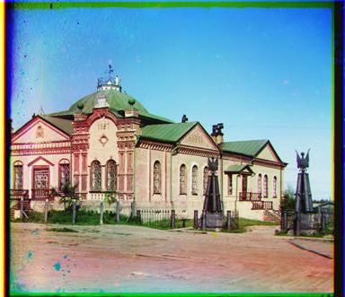

Computer Vision
Assignment 1
- url: https://www.cs.toronto.edu/~guerzhoy/320/proj1/
- 內容: 給一張黑白圖片，從上到下分別是使用 B, G, R 的filter拍攝。要把圖片分割成三個channel，並且align三張圖片（使用NCC or SSD尋找最好的align dx dy, 我是使用NCC）最後再把三個channel疊在一起形成一張RGB圖片。
- 結果:
圖片有.png檔案和.jpg檔案，align對.jpg的效果比較好，有些.png的效果比較不好。在做的時候我發現.png傳進來的pixel是用I;16儲存 （好像是16 bit存一個pixel），而且.png檔案好像比較大。但如果先切割過對.png的align效果會比較好。
 input  output